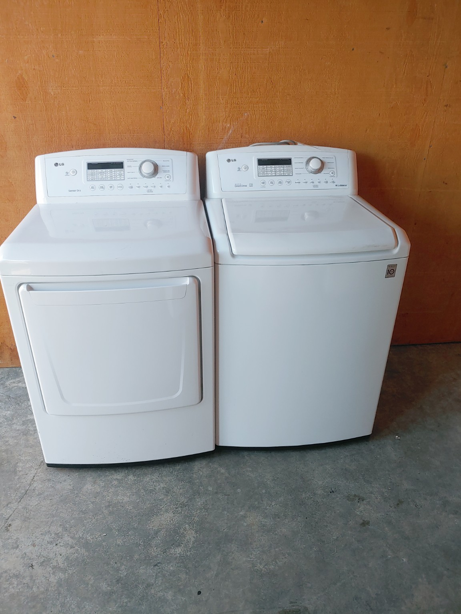
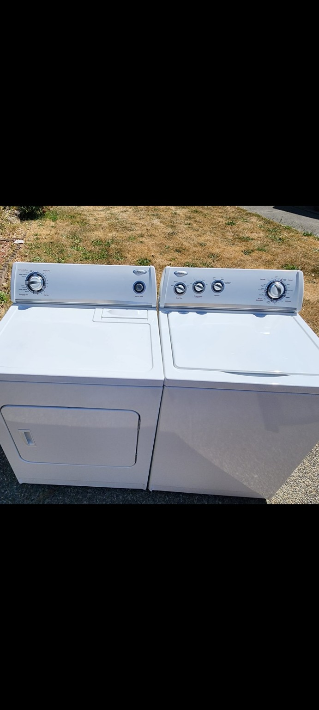
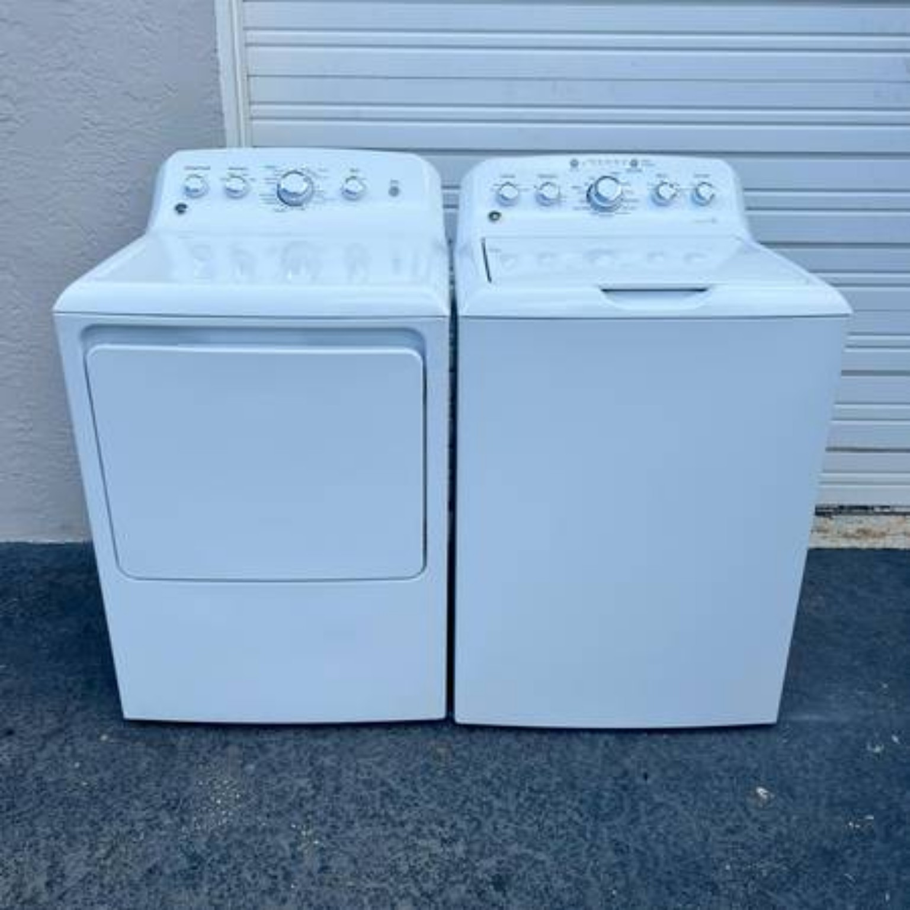
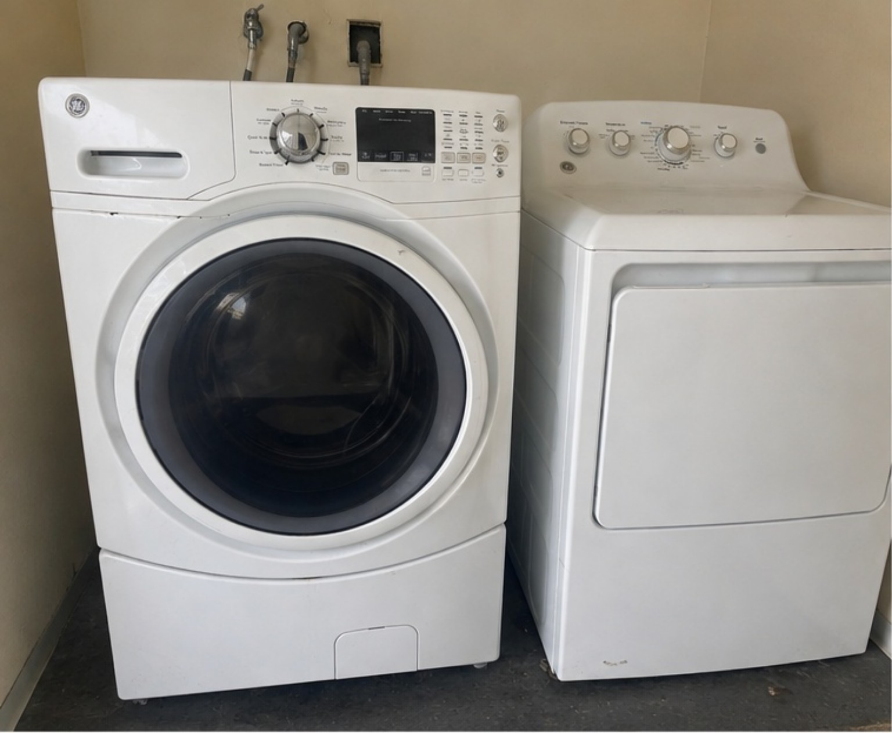

What We Do
Free Reliable Appliance Pickup has been operating since 2010. Our appliance guidance is built from hands-on pickup, condition review, resale and reuse experience.
Free Reliable Appliance Pickup reviews requests for washers, dryers, refrigerators, freezers, stoves, ranges, ovens and qualifying multi-appliance loads. Our goal is to make appliance removal simple while prioritizing working and reusable equipment.
Free pickup is not automatic for every appliance. Each request is reviewed based on appliance condition, current local demand, pickup access, location and available route coverage.
Pickup Service — Not a Public Drop-Off Storefront
Free Reliable Appliance Pickup operates as a pickup and service-area network. Customers should not bring appliances to an address unless a specific drop-off arrangement has been confirmed directly. Appliance pickup is scheduled only after the item condition, exact pickup location, access and current route or partner availability are reviewed.
A Nationwide Appliance Pickup Request Network
Free Reliable Appliance Pickup is built as one national request and coordination network, not as hundreds of unrelated local businesses. Customers can submit a pickup request through the same central system, and we review the appliance details before deciding how the request can be fulfilled.
Central request system
Customers provide appliance type, condition, photos when available, access details and city or ZIP code.
Request review
We evaluate whether the appliances may qualify and whether current route coverage is available.
Local fulfillment
Established markets are reviewed through current local route coverage. Other supported markets are reviewed only where active pickup coverage is available.
A request is not scheduled until appliance qualification, access and current local coverage are confirmed.
A state or city appearing on our website does not mean every appliance automatically qualifies or that pickup is guaranteed there. Qualification and local availability are confirmed after review.
See how our service areas are organized · Los Angeles appliance pickup
What Usually Qualifies
Fully working major appliances receive priority. Minor repair needs may be considered. Mixed loads may qualify when approximately 80% of the appliances are working. A single nonworking appliance does not automatically qualify for free pickup.
Microwaves are accepted only with another qualifying major appliance. Dishwashers are considered only when included with two or more major working appliances.
How a Pickup Request Is Reviewed
1. Appliance details
Tell us the appliance type, brand when known, working condition and whether it is currently plugged in or testable.
2. Photos and location
Photos, city or ZIP code and a clear description help us evaluate the request accurately.
3. Access
Tell us whether the appliance is in a garage, driveway, first floor, upstairs, basement or outside, including stairs and narrow access.
4. Confirmation
Pickup is scheduled only after the request is reviewed and current local route coverage is confirmed.
Los Angeles Customer Requests
Los Angeles customers can use the dedicated Los Angeles appliance pickup and removal page to review qualification rules, apartment and access details, call or text the 310 regional number, and submit a direct pickup request.
Contact by Service Region
Oregon & Washington
Inland Empire, Orange County & Riverside Region
Los Angeles & Other California Coverage
Colorado
Service hours: Monday through Sunday, 8:00 AM–8:00 PM.
How Our Appliance Pickup Guidance Is Built
Our guidance is based on hands-on appliance pickup, condition review and appliance resale experience. That is why we ask practical questions before a pickup is scheduled: does the washer fill, drain and spin; does the dryer heat and tumble; does the refrigerator maintain temperature; and are stairs, tight turns, gates or door removal involved?
We use real appliance photos from our work and inventory rather than stock advertising images.






Helpful Appliance Pickup Guides
Washer & dryer pickup · Refrigerator pickup · Freezer pickup · Stove & oven pickup
Need Another Appliance Disposal Option?
Compare reuse, pickup and responsible appliance disposal options